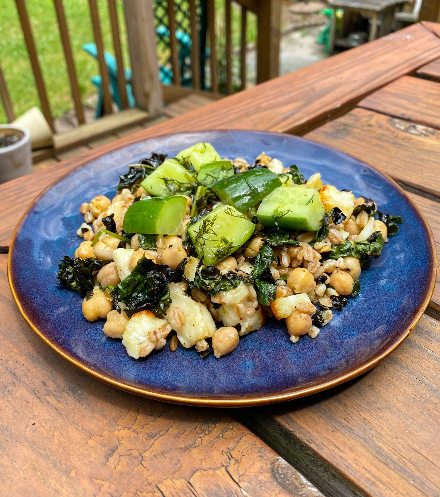

Halloumi Grain Bowl with Crispy Kale and Cucumber Slaw

This easy, filling, and deeply satisfying sheet-pan meal has a beautiful balance of flavors between the roasted savory ingredients and a refreshing slaw. This dish can be prepped in advance, making it perfect for a weeknight meal or a dinner with friends where you don’t want to be trapped in the kitchen for an hour.
Grain Bowl with Halloumi and Cucumber Slaw
Grain Bowl with Halloumi and Cucumber Slaw
Yields:
Serves 4
Active Time:
20 minutes
Total Time:
30 minutes (plus cooking time for grains)
Ingredients:
- 3 cups cooked grains like farro or brown rice (see note for farro instructions)
- 8-10 oz. halloumi, cut into 1-inch pieces
- 1 (15 oz.) can chickpeas, drained, rinsed, and shaken dry
- Large handful of kale, washed and roughly chopped
- 4 Persian or mini seedless cucumbers
- 2 limes or lemons
- Large handful of freshly chopped herbs like cilantro, dill, parsley, or a mix of any
- ¼ cup olive oil, plus more as needed
- 1 tsp ground cumin
- Kosher salt and black pepper
Recipe:
- Place rack six inches or so under broiler and heat to high.
- Put grains, halloumi, kale, and chickpeas in a large bowl, making sure everything is nice and dry as you add it. Season with kosher salt. Add ¼ cup olive oil and cumin, and stir to combine. Line a sheet pan with parchment paper and spread grain mixture out into a single layer. (If doing ahead, place mixture on sheet pan before adding oil and spices and refrigerate. Add spices and oil right before cooking.)
- Place grain mixture under broiler and set a timer for 8 minutes, stirring things around halfway through to prevent burning. Cook up to 10-12 minutes if you want more browning, but be sure not to let things burn.
- Meanwhile, smash cucumbers with the side of your knife. Coarsely chop and add to a bowl along with any juices that leaked onto your cutting board. Season with salt. Zest lime or lemon over the cucumbers, then squeeze the juice in. Add herbs and 1 tablespoon of olive oil and stir to combine. Set aside. (This can be prepared up to 3 hours in advance).
- Once the grain mixture is done cooking, taste for seasoning with salt, pepper, and citrus juice.
- Serve grain mixture in a bowl topped with cucumber slaw.
Helpful Notes:
Farro increases by about twice its volume when cooked. For this recipe, I usually cook 1-2 cups of farro in 4-6 cups of vegetable stock. This will give you a little extra, which is never a bad thing. You can use it all in this dish for extra fiber or save the extra for something else.
Return Home